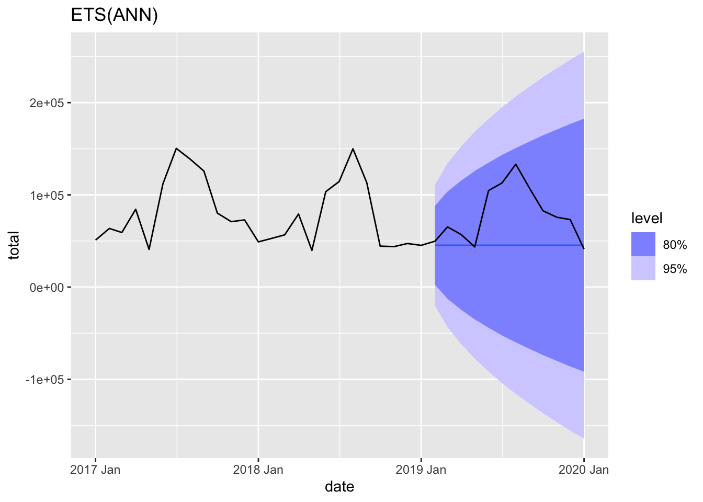
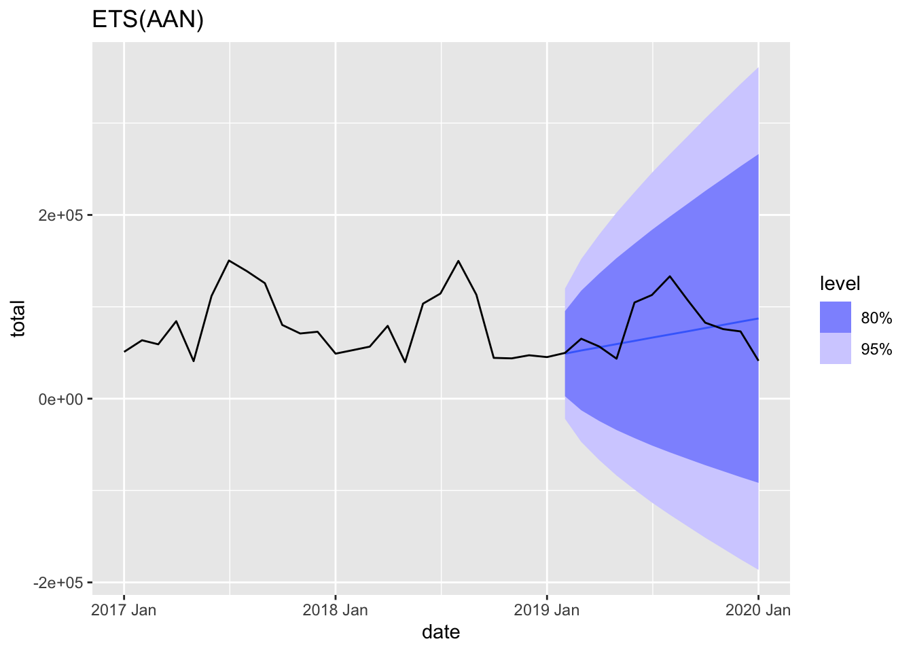
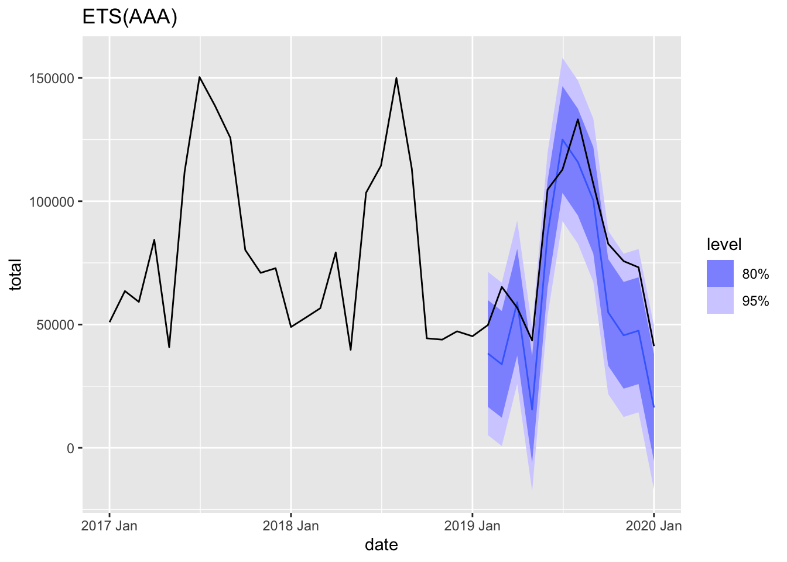
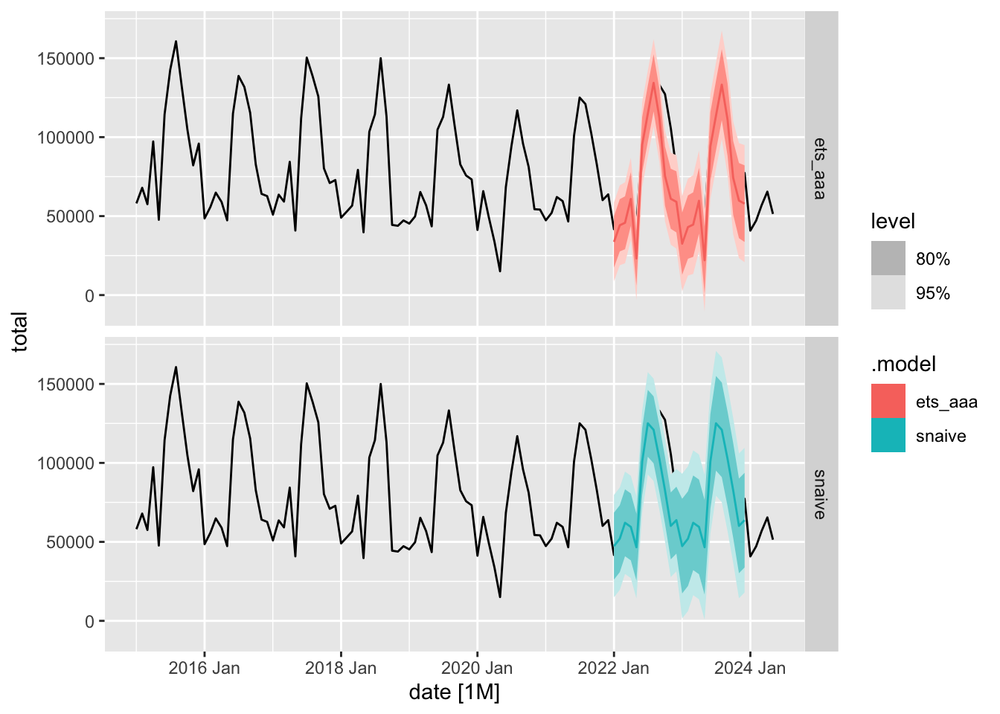

Chapter 2 Exponential smoothing models
## Rows: 24,852
## Columns: 4
## $ code <int64> 1000000000, 1000000000, 1000000000, 1000000000, 1000000000, 1000000000, 1000000000, 1000000000, 1000000000, 1000000000, 1000000000, 1000000000, 1…
## $ name <chr> "Алтайский край", "Алтайский край", "Алтайский край", "Алтайский край", "Алтайский край", "Алтайский край", "Алтайский край", "Алтайский край", "Ал…
## $ total <int> 953, 1007, 1311, 1554, 562, 1900, 2338, 3034, 2460, 1762, 1411, 1554, 1069, 1221, 1330, 1774, 609, 2107, 2708, 3272, 2483, 1825, 1721, 1940, 1006, …
## $ date <IDate> 2006-01-01, 2006-02-01, 2006-03-01, 2006-04-01, 2006-05-01, 2006-06-01, 2006-07-01, 2006-08-01, 2006-09-01, 2006-10-01, 2006-11-01, 2006-12-01, 2…ts_marriages <- m |>
mutate(date = yearmonth(date)) |>
as_tsibble(index = date, key = c('code', 'name'))
glimpse(ts_marriages)## Rows: 24,852
## Columns: 4
## Key: code, name [109]
## $ code <int64> 30, 30, 30, 30, 30, 30, 30, 30, 30, 30, 30, 30, 30, 30, 30, 30, 30, 30, 30, 30, 30, 30, 30, 30, 30, 30, 30, 30, 30, 30, 30, 30, 30, 30, 30, 30, 3…
## $ name <chr> "Центральный федеральный округ", "Центральный федеральный округ", "Центральный федеральный округ", "Центральный федеральный округ", "Центральный фе…
## $ total <int> 14845, 16414, 15753, 21803, 9384, 29571, 35691, 39263, 40480, 24137, 21207, 19009, 15433, 17430, 13878, 29703, 10529, 31572, 41328, 42609, 41779, 2…
## $ date <mth> 2006 Jan, 2006 Feb, 2006 Mar, 2006 Apr, 2006 May, 2006 Jun, 2006 Jul, 2006 Aug, 2006 Sep, 2006 Oct, 2006 Nov, 2006 Dec, 2007 Jan, 2007 Feb, 2007 Ma…2.1 ETS(ANN) model
ETS - Error, Trend, Seasonality.
ANN - Additive error, No trend, No seasonality.
- \(y_t\) - observed time series
- \(l_t\) - trend, cleaned time series
- \(u_t\) - random error
\[ y_t = l_{t-1} + u_t \]
Assume
- \(l_t = l_{t-1} + \alpha u_t\), \(l_0\) - start value.
- \(u_t \sim \mathcal{N}(0,\,\sigma^{2})\) and independent.
Parameters of the model: \(\alpha, \sigma^2, l_0\).
\[ \begin{cases} y_t = l_{t-1} + u_t \\ l_t = l_{t-1} + \alpha u_t, l_0 - \text {start value} \\ u_t \sim \mathcal{N}(0,\,\sigma^{2}) \text { and independent} \end{cases} \]
2.1.1 Forecast
One-step forecast
\[ y_{T+1} = l_T + u_{T+1} \]
\[ (y_{T+1}|\mathcal{F_T}) \sim \mathcal{N}(l_T, \sigma^2) \]
Two-step forecast
\[ y_{T+2} = l_{T+1} + u_{T+2} = l_T + \alpha u_{T+1} + u_{T+2} \]
\[ (y_{T+2}|\mathcal{F_T}) \sim \mathcal{N}(l_T, \sigma^2(\alpha^2 + 1)) \]
Predictive Interval
\[ [\hat l_T - 1.96\hat\sigma\sqrt{\hat\alpha^2+1}; \hat l_T + 1.96\hat\sigma\sqrt{\hat\alpha^2+1}] \]
Simple exponential smoothing
\[ \begin{cases} y_t = l_{t-1} + u_t \\ l_t = l_{t-1} + \alpha u_t, l_0 - \text {start value} \end{cases} \]
\[ l_t = l_{t-1} + \alpha(y_t-l_{t-1}) = \alpha y_t + (1-\alpha)l_{t-1} \]
\[ \hat l_1 = y_1 \]
\[ \hat l_t = \alpha y_t + (1-\alpha)\hat l_{t-1} \]
\[ \min_{\alpha} \sum (y_t - \hat l_t)^2 \]
2.1.2 Example
rf_m <- ts_marriages |>
filter(code == 643, !is.na(total), yearmonth(date) >= yearmonth('2017 JAN'),
yearmonth(date) <= yearmonth('2020 JAN'))# ETS(ANN)
rf_m |>
filter(date < yearmonth('2019 Feb')) |>
model(ETS(total ~ error('A') + trend('N') + season('N'))) |>
forecast(rf_m |>
filter(date >= yearmonth('2019 Feb')), h=12) |>
autoplot(rf_m) +
labs(title = 'ETS(ANN)')## Warning: Input forecast horizon `h` will be ignored as `new_data` has been provided.
2.2 ETS(AAN) model
ETS - Error, Trend, Seasonality.
AAN - Additive error, Additive trend, No seasonality.
- \(y_t\) - observed time series
- \(l_t\) - trend, cleaned time series
- \(b_t\) - current speed of growth cleaned time series
- \(u_t\) - random error
\[ \begin{cases} y_t = l_{t-1} + b_{t-1} + u_t \\ l_t = l_{t-1} + b_{t-1} + \alpha u_t, l_0 - \text {start value} \\ u_t \sim \mathcal{N}(0,\,\sigma^{2}) \text { and independent} \\ b_t = b_{t-1} + \beta u_t, \beta_0 - \text {start value} \end{cases} \]
Parameters of the model: \(\alpha, \beta, \sigma^2, l_0, b_0\).
2.2.1 Forecast
2.2.2 Example
# ETS(AAN)
rf_m |>
filter(date < yearmonth('2019 Feb')) |>
model(ETS(total ~ error('A') + trend('A') + season('N'))) |>
forecast(rf_m |>
filter(date >= yearmonth('2019 Feb')), h=12) |>
autoplot(rf_m) +
labs(title = 'ETS(AAN)')## Warning: Input forecast horizon `h` will be ignored as `new_data` has been provided.
2.3 ETS(AAA) model
ETS - Error, Trend, Seasonality.
AAA - Additive error, Additive trend, Additive seasonality.
- \(y_t\) - observed time series
- \(l_t\) - trend, cleaned time series
- \(b_t\) - current speed of growth cleaned time series
- \(s_t\) - seasonal component
- \(u_t\) - random error
\[ \begin{cases} y_t = l_{t-1} + b_{t-1} + s_{t-m} + u_t, m - \text{seasonal period} \\ l_t = l_{t-1} + b_{t-1} + \alpha u_t, l_0 - \text {start value} \\ u_t \sim \mathcal{N}(0,\,\sigma^{2}) \text { and independent} \\ b_t = b_{t-1} + \beta u_t, \beta_0 - \text {start value} \\ s_t = s_{t-m} + \gamma u_t, s_0, s_{-1},..., s_{-(m-1)} - \text{start values} \end{cases} \]
Parameters of the model: \(\alpha, \beta, \gamma, \sigma^2, l_0, b_0, s_0, s_{-1},...,s_{-(m-1)}\).
Limitation: \(s_0 + s_{-1} + ... + s_{-(m-1)} = 0\)
2.3.1 Forecast
2.3.2 Example
# ETS(AAA)
rf_m |>
filter(date < yearmonth('2019 Feb')) |>
model(ETS(total ~ error('A') + trend('A') + season('A'))) |>
forecast(rf_m |>
filter(date >= yearmonth('2019 Feb')), h=12) |>
autoplot(rf_m) +
labs(title = 'ETS(AAA)')## Warning: Input forecast horizon `h` will be ignored as `new_data` has been provided.
2.4 Model selection
Mean Absolute Percentage Error
\[ e_{t+h} = y_{t+h} - \hat y_{t+h} \]
\[ p_t = e_t/y_t \times 100 \]
\[ MAPE = \frac {|p_{T+1}| + |p_{T+2}| + ... + |p_{T+H}|} H \]
Symmetric Mean Absolute Percentage Error
\[ p_t^s = e_t/(0.5y_t + 0.5 \hat y_t) \times 100 \]
\[ sMAPE = \frac {|p_{T+1}^s| + |p_{T+2}^s| + ... + |p_{T+H}^s|} H \]
2.5 Examples
2.5.1 Model selection by MSE
## Rows: 24,852
## Columns: 4
## Key: code, name [109]
## $ code <int64> 30, 30, 30, 30, 30, 30, 30, 30, 30, 30, 30, 30, 30, 30, 30, 30, 30, 30, 30, 30, 30, 30, 30, 30, 30, 30, 30, 30, 30, 30, 30, 30, 30, 30, 30, 30, 3…
## $ name <chr> "Центральный федеральный округ", "Центральный федеральный округ", "Центральный федеральный округ", "Центральный федеральный округ", "Центральный фе…
## $ total <int> 14845, 16414, 15753, 21803, 9384, 29571, 35691, 39263, 40480, 24137, 21207, 19009, 15433, 17430, 13878, 29703, 10529, 31572, 41328, 42609, 41779, 2…
## $ date <mth> 2006 Jan, 2006 Feb, 2006 Mar, 2006 Apr, 2006 May, 2006 Jun, 2006 Jul, 2006 Aug, 2006 Sep, 2006 Oct, 2006 Nov, 2006 Dec, 2007 Jan, 2007 Feb, 2007 Ma…## Plot variable not specified, automatically selected `y = total`
fits <- train |>
model(snaive = SNAIVE(total),
ets_aaa = ETS(total ~ error('A') + trend('A') + season('A')),
ets_ana = ETS(total ~ error('A') + trend('N') + season('A')))rf_m |>
filter(date >= yearmonth('2015 JAN')) |>
autoplot(total) +
autolayer(fc |> filter(.model %in% c('snaive', 'ets_aaa'))) +
facet_grid(.model ~ .)
## # A tibble: 3 × 12
## .model code name .type ME RMSE MAE MPE MAPE MASE RMSSE ACF1
## <chr> <int64> <chr> <chr> <dbl> <dbl> <dbl> <dbl> <dbl> <dbl> <dbl> <dbl>
## 1 ets_aaa 643 Российская Федерация Test 12260. 19065. 14733. 17.2 19.3 NaN NaN 0.403
## 2 ets_ana 643 Российская Федерация Test 10085. 17827. 13310. 14.3 17.1 NaN NaN 0.413
## 3 snaive 643 Российская Федерация Test 6366. 15781. 10086. 5.48 11.4 NaN NaN 0.5612.5.2 Model Averaging
fits <- train |>
model(snaive = SNAIVE(total),
ets_aaa = ETS(total ~ error('A') + trend('A') + season('A')),
ets_ana = ETS(total ~ error('A') + trend('N') + season('A')),
ets_aaa_ln = ETS(log(total) ~ error('A') + trend('A') + season('A')),
ets_ana_ln = ETS(log(total) ~ error('A') + trend('N') + season('A')))## # A tibble: 5 × 12
## .model code name .type ME RMSE MAE MPE MAPE MASE RMSSE ACF1
## <chr> <int64> <chr> <chr> <dbl> <dbl> <dbl> <dbl> <dbl> <dbl> <dbl> <dbl>
## 1 ets_aaa 643 Российская Федерация Test 12260. 19065. 14733. 17.2 19.3 1.16 1.15 0.403
## 2 ets_aaa_ln 643 Российская Федерация Test 9574. 16092. 10657. 10.8 12.3 0.843 0.974 0.512
## 3 ets_ana 643 Российская Федерация Test 10085. 17827. 13310. 14.3 17.1 1.05 1.08 0.413
## 4 ets_ana_ln 643 Российская Федерация Test 6326. 14987. 9674. 6.99 11.0 0.765 0.907 0.511
## 5 snaive 643 Российская Федерация Test 6366. 15781. 10086. 5.48 11.4 0.798 0.955 0.561# make combinations
fits2 <- fits |>
mutate(top2 = (ets_ana_ln + snaive)/2,
top3 = (ets_ana_ln + snaive + ets_aaa_ln)/3)## # A tibble: 7 × 12
## .model code name .type ME RMSE MAE MPE MAPE MASE RMSSE ACF1
## <chr> <int64> <chr> <chr> <dbl> <dbl> <dbl> <dbl> <dbl> <dbl> <dbl> <dbl>
## 1 ets_aaa 643 Российская Федерация Test 12260. 19065. 14733. 17.2 19.3 1.16 1.15 0.403
## 2 ets_aaa_ln 643 Российская Федерация Test 9574. 16092. 10657. 10.8 12.3 0.843 0.974 0.512
## 3 ets_ana 643 Российская Федерация Test 10085. 17827. 13310. 14.3 17.1 1.05 1.08 0.413
## 4 ets_ana_ln 643 Российская Федерация Test 6326. 14987. 9674. 6.99 11.0 0.765 0.907 0.511
## 5 snaive 643 Российская Федерация Test 6366. 15781. 10086. 5.48 11.4 0.798 0.955 0.561
## 6 top2 643 Российская Федерация Test 6346. 15029. 9176. 6.24 10.2 0.726 0.909 0.577
## 7 top3 643 Российская Федерация Test 7422. 15219. 9284. 7.77 10.3 0.734 0.921 0.5682.5.3 Cross-validation
## [1] 221fits <- rf_m_stretch |>
model(snaive = SNAIVE(total),
ets_aaa = ETS(total ~ error('A') + trend('A') + season('A')),
ets_ana = ETS(total ~ error('A') + trend('N') + season('A')),
ets_aaa_ln = ETS(log(total) ~ error('A') + trend('A') + season('A')),
ets_ana_ln = ETS(log(total) ~ error('A') + trend('N') + season('A')))
fits |>
forecast(h = 1) |>
accuracy(rf_m)## Warning: The future dataset is incomplete, incomplete out-of-sample data will be treated as missing.
## 1 observation is missing at 2024 Jun## # A tibble: 5 × 12
## .model code name .type ME RMSE MAE MPE MAPE MASE RMSSE ACF1
## <chr> <int64> <chr> <chr> <dbl> <dbl> <dbl> <dbl> <dbl> <dbl> <dbl> <dbl>
## 1 ets_aaa 643 Российская Федерация Test 1251. 16009. 11867. 0.102 14.8 0.941 0.947 0.526
## 2 ets_aaa_ln 643 Российская Федерация Test 1068. 15350. 11553. -0.901 14.8 0.916 0.908 0.564
## 3 ets_ana 643 Российская Федерация Test 2002. 15703. 11344. 1.28 14.1 0.900 0.929 0.518
## 4 ets_ana_ln 643 Российская Федерация Test 385. 14567. 11041. -1.81 14.4 0.876 0.861 0.487
## 5 snaive 643 Российская Федерация Test 1178. 22175. 14984. -1.79 17.7 1.19 1.31 0.683## Warning: The future dataset is incomplete, incomplete out-of-sample data will be treated as missing.
## 1 observation is missing at 2024 Jun## # A tibble: 6 × 12
## .model code name .type ME RMSE MAE MPE MAPE MASE RMSSE ACF1
## <chr> <int64> <chr> <chr> <dbl> <dbl> <dbl> <dbl> <dbl> <dbl> <dbl> <dbl>
## 1 ets_aaa 643 Российская Федерация Test 1251. 16009. 11867. 0.102 14.8 0.941 0.947 0.526
## 2 ets_aaa_ln 643 Российская Федерация Test 1068. 15350. 11553. -0.901 14.8 0.916 0.908 0.564
## 3 ets_ana 643 Российская Федерация Test 2002. 15703. 11344. 1.28 14.1 0.900 0.929 0.518
## 4 ets_ana_ln 643 Российская Федерация Test 385. 14567. 11041. -1.81 14.4 0.876 0.861 0.487
## 5 snaive 643 Российская Федерация Test 1178. 22175. 14984. -1.79 17.7 1.19 1.31 0.683
## 6 top2 643 Российская Федерация Test 1193. 15043. 11158. -0.265 14.2 0.885 0.890 0.505